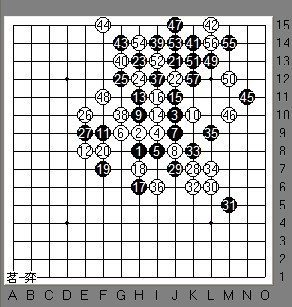

上海五子棋“冠军杯”顾棋王VS黄宇峰
#1 上海五子棋“冠军杯”顾棋王VS黄宇峰 作者：刺青 发表时间：2010-3-1 14:13:00
2010大年前夕，第三届上海五子棋“冠军杯”赛在古滇茶坊开战。我还是挑顾棋王和宇峰的一盘梳星小评下吧，希望大家多提意见为感。
记得上次写的他俩的棋评是去年的棋王赛上的一局，宇峰我是更看好的，年轻，劲足，不知道这段时间他的进步是否又有令人咂舌之处，我们拭目以待。看实战：
（图一）
梳星2打，棋王还执黑，因为他的棋风我们都比较了解，先防守再反攻但这次改变了。这个变化还是大有下头的，9选择了常见点，控制外势。10最常见也最强，而11手？这个11是近败。应该是棋王在考宇峰？
（图二）
以上是我对这几个11的简单分析，大家可以拆下我们共同交流。那么对于实战的11，我们再做个简单分析：
（图三）
如上图，如在B点也是近杀，那一路曾见棋情下过；而宇峰这个12位于A点，也是近胜；A2点也很强；而12此时直接在E8稍弱了，因为黑上边有棋。
（图四）
13手14手均为最强手段，15手的选择大致如上图，棋王落子于B点，直接封住白的活2，而自己在上边的棋也比较集中，但拓展力度似乎不够。
（图五）
宇峰这个16还原为上图那个变化，看来棋王也是研究过这个局面，知道上边黑虽暂时有优势但难杀，所以为了省去不必要的子力，17，19直接在下边进攻，而宇峰由16手开始已经非常谨慎了。
（图六）
20以后，下边黑又暂时没棋了，而棋王这一轮是进攻棋手，21无奈转到上边去进攻，因为不想丢先手。黑棋如果丢先了，肯定麻烦大大了。而宇峰不急不躁，你攻一手，我防一手。因为我们知道，越到后边空间越小，黑越难，白却越好。26白限制中发展，27比较郁闷了。其实个人觉得27不妨大胆落在E7，争取下边的地盘。而实战这个27也丝毫没能挽回局面，28宇峰以眠三一子三通开始进攻了！
（图七）
到34手成小四角型，都攻得非常顺畅。35妙！本来这手只是活三来防白棋，但这个36宇峰大意了，为什么呢？我们接下来看到了，因为档在了下边，给黑上边留 了个眠三，棋王也极其机灵，马上就临场计算，设计了一个陷阱，依靠这个眠三可以和上边的棋连接起来做杀。现在我们再次充分见识到了他的强大。37这个点开始一直没下，现在冲掉，39活一假三以梅花状展开进攻也做了个漂亮而厉害的棋型。如果白这手不应在要点，我们看看黑杀的线路：

（图八）
所以这里我们不得不承认棋王的实力很强劲。我们回到图七；此时仅ＡＢ两个点可防，很可惜宇峰这里没找对，掉到了棋王的陷阱里了。
（图九）
如图黑简单杀了。
各位观众请注意！很抱歉实战中这里棋王打了个盹，漏杀了。
（图十）
由于漏杀2次，最后黑没防而挂掉了。赛后大家问起棋王，为何到最后本杀了却出晕招？棋王笑了：“对简单VCF产生幻觉了，输给钱坤那局也一样。”
本来都努力拼搏到最后
#2 Re:上海五子棋“冠军杯”顾棋王VS黄宇峰 作者：wsmwy 发表时间：2010-3-1 16:17:18
这么好的文章顶起
#3 Re:上海五子棋“冠军杯”顾棋王VS黄宇峰 作者：妙玉偷星 发表时间：2010-3-1 16:19:11
那天我本来要去看的，结果后来有事。#4 Re:上海五子棋“冠军杯”顾棋王VS黄宇峰 作者：潜龙勿用吉 发表时间：2010-3-1 18:24:58
疏星怎么变梳星了啊。。。